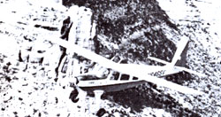

Dedicated pilot Michael Stewartt fights environmental battles from the helm of his airborne flagship, in a service called . . .
A new bird has taken to the Rocky Mountain skies . . . sharing the thin air with the eagles and hawks that lord it over those western peaks. The newcomer is a five-passenger Helio-Courier airplane, piloted by Michael Stewartt of Grand Junction, Colorado. With the goal of becoming "the wings of conservationists in the West", Stewartt's Project Lighthawk is providing the Rocky Mountain environmental community with affordable (or even cost-free) and quick transportation.
Early this year, Mike got a chance to prove his brainchild's worth when the Bureau of Land Management made a preliminary decision in favor of a proposed dam, the construction of which would have resulted in the flooding of a picturesque canyon in western Colorado. The Lighthawk aircraft flew a local photographer over the wilderness area . . . and then took him to Denver for the final hearing, where his aerial photos convinced the BLM officials to reconsider.
Then- from Denver-Stewartt ferried several environmentalists to Salt Lake City, so they could attend an organizational meeting for opponents of the Sagebrush Rebellion (a group which hopes to open up BLM and national forest lands to development). On such trips, the pilot points out, his plane can get environmental representatives to their meetings at less expense than can the commercial airlines, and in much less time than could an automobile. Moreover, the small craft can land at tiny mountain airfields as well as crowded metropolitan airports . . . enabling activists to be present at local grassroots meetings or major hearings.
In addition to its duties as an "aerial ferryboat", Lighthawk provides an airborne "watchdog" service. Flying; easily-and safely-through high mountain ranges and narrow canyons, the small plane offers its passengers a bird's-eye view of mining, logging, dams, drilling, and other operations that may be illegally damaging public lands.
Stewartt-a veteran wilderness guide-is no novice to aviation and environmental causes. As a volunteer for Wings of Hope, he flew lifesaving missions in Guatemala . . . and, in 1975, piloted journalists and photographers over a proposed site for what would have been the largest coalfired electric plant in this country, near the Grand Canyon and other natural treasures. The publicity from the latter effort created a storm of public opposition to the project, and eventually resulted in its suspension.
In its few months of operation, Project Lighthawk has already received positive feedback from environmental groups: testimonial letters of thanks for Stewartt's airborne assist have come from the Nature Conservancy, the American Wilderness Alliance, the Sierra Club, Defenders of Wildlife, the National Wildlife Federation, and the Wyoming Wilderness Association.
EDITOR'S NOTE: For more information about Mike Stewartt's services, write-including a self-addressed. stamped envelope and perhaps a dollar or so-to Project Lighthawk, Dept. TMEN, P.O. Box 3871,, Grand Junction, Colorado 81502.
|
 |
|
|